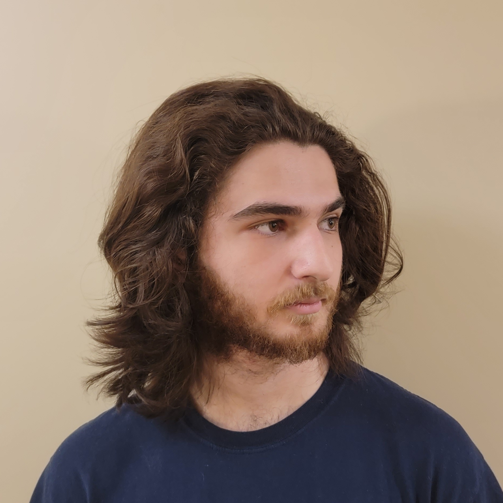

2026
A Unitree Go1 you can talk to: speak a destination and it navigates there on its own. Highlights from the build and the hardware hurdles.

Robotics @ Northeastern University
I'm a Master's student advised by Prof. Nivii Kalavakonda at Northeastern University in Seattle. My research focuses on embodied robotics, with an emphasis on navigation and perception.
My mission is to build embodied systems that can be helpful companions to humans in their daily lives.
A Unitree Go1 you can talk to: speak a destination and it navigates there on its own. Highlights from the build and the hardware hurdles.
Autonomous RC car on an NVIDIA Jetson with a trained vision model for road following. Senior capstone.